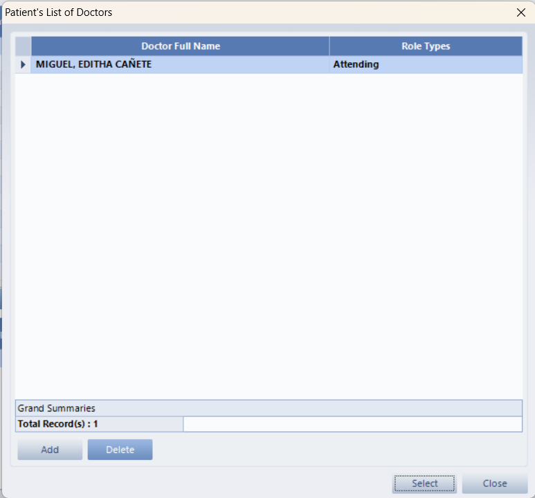
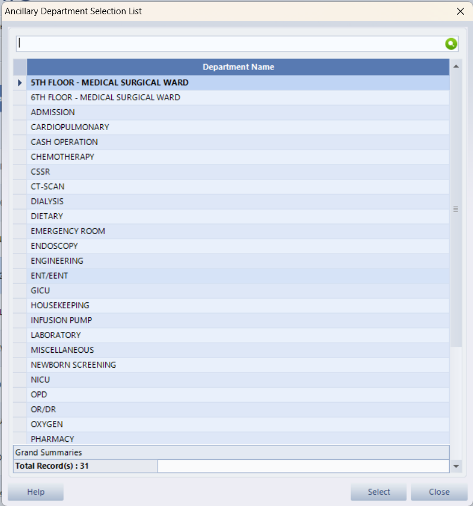
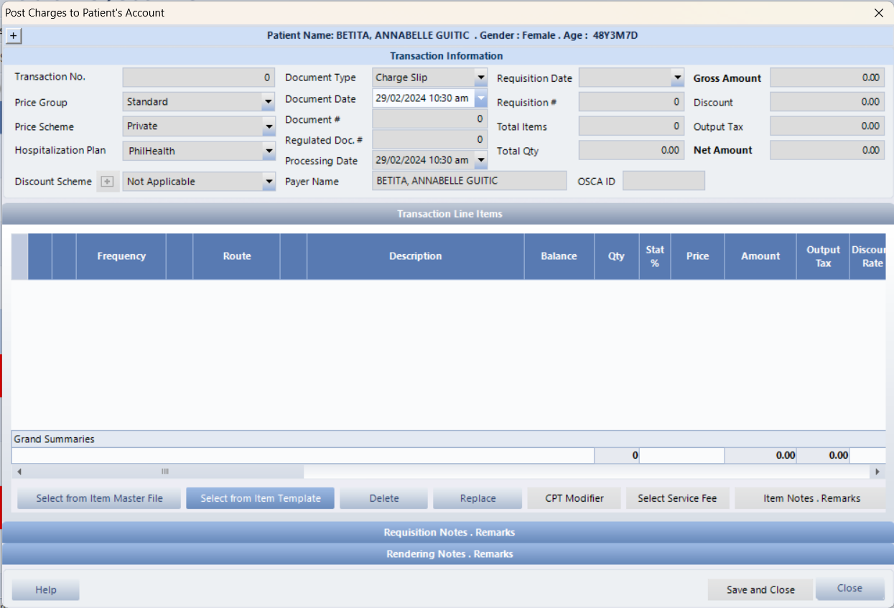
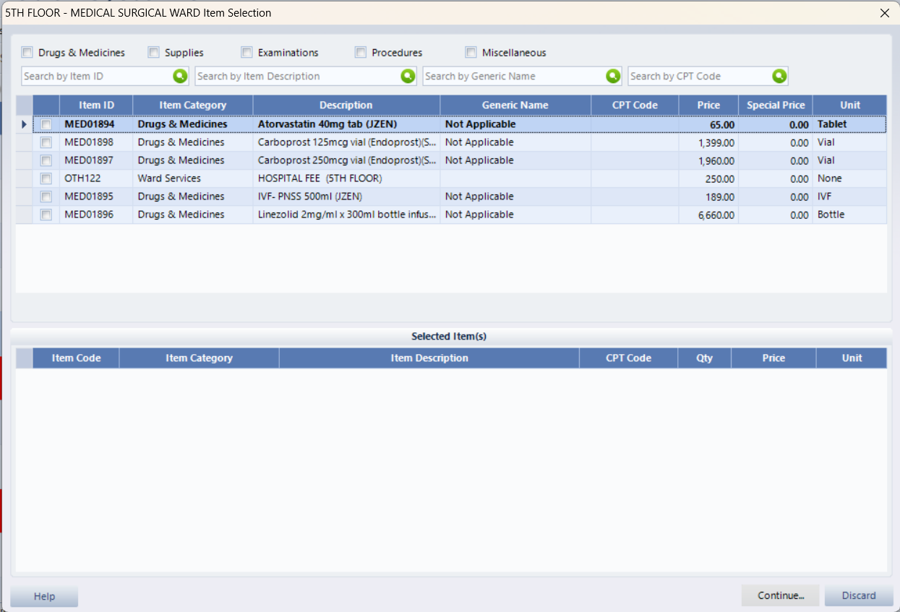
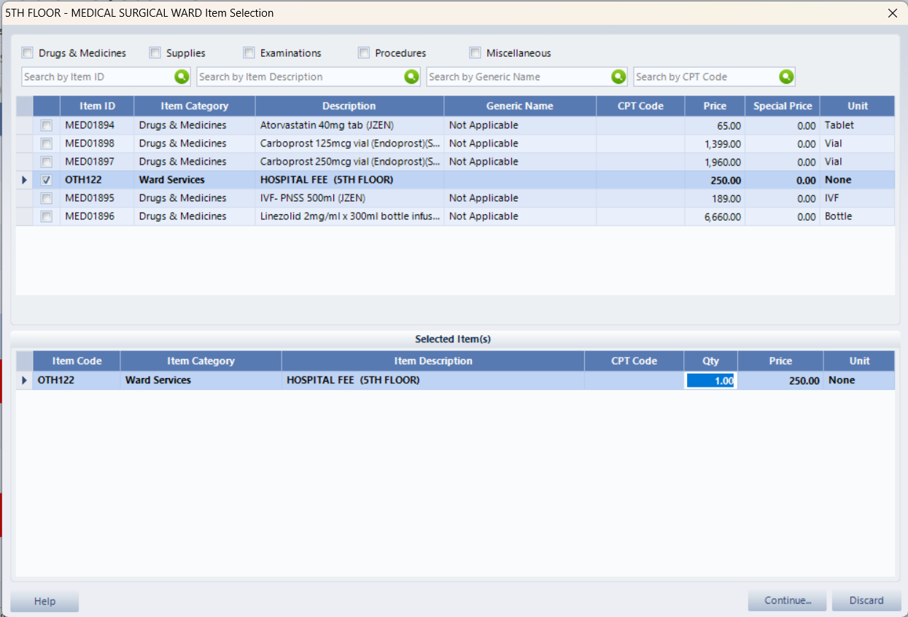
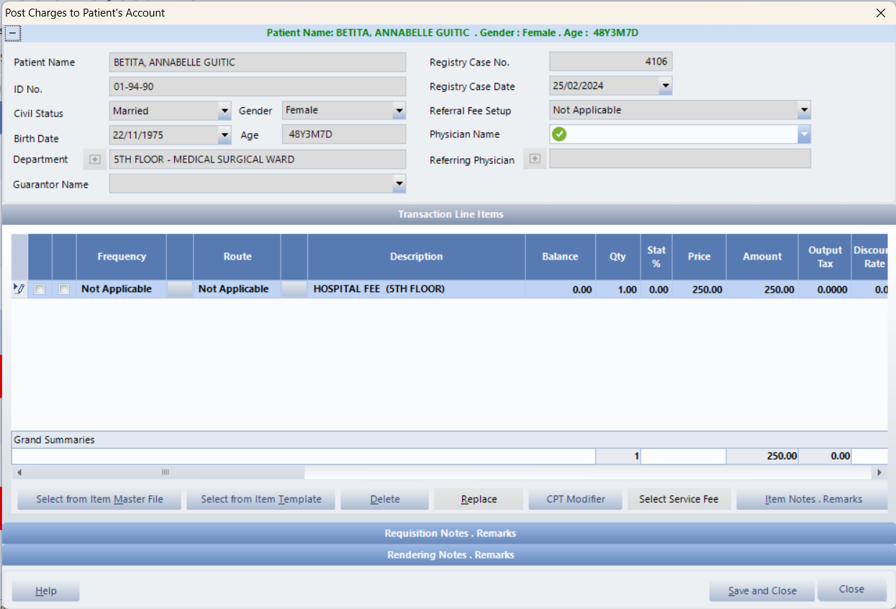
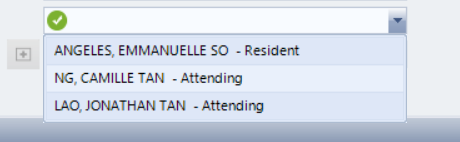

The Requisitions process in the Emergencies, Outpatients, Inpatients and Nursing Services are the same; they just vary
on their locations.
From the outpatient, Emergency, Inpatient, Nursing services Modules There's a
Requisition option on the Left Side of the Interface at the subcomponent section
Click the Requisition option and a pop up window will show up. This is the requisition ledger of the patient:
As you can see the color coding of each request represents as blue, gray, sky blue, magenta, and red.
Each Color has a status.
To request items and services you must click on the add button on the bottom right of the screen.
Once clicked a window will pop up. Select the department of which ancillary that the item and services are available
To select an item you must click on the checkbox.
After that select the physician of the patient.
Select the physician of the patient.
Print the requisition slip of the patient.
To check if the request has gone through. There will be a Gray color besides the ancillary.
Strongly advised to check the quantity of the request to avoid discrepancies and mischarges.Posting charges to different accounts of Inpatients, Outpatients and Emergencies have similar steps, they just vary on their locations (for Outpatients, go to: Main Explorer>Outpatients; for Emergencies, go to: Main Explorer>Emergencies). In the example below, we used Inpatients.
Select a patient on the list then click Post Charges under Sub Components.
The Ancillary Department Selection window appears; highlight a department then click Select.
The Post Charges to Patient’s Account window will be displayed; select the Document Type then click Select from Item Master File button.
The 5th floor Item Selection window will appear. Put a checkmark on the selected items then click Continue button.
 If the particular patient is entitled for a discount upon registration, it will automatically be reflected on the Discount Base and Rate columns. You can also specify the Physician and the Guarantor in charge by clicking the (+) button on the upper left part of the window. Since the physician is required you must input a physician.
 After that all of the items are checked and properly input all the needed details.
Save and close the window.